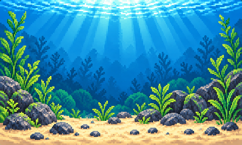

Estudo de movimento · fora do aplicativo
Douradinho nadando
Nado de 12 segundos com cauda, barbatanas independentes, piscadas ocasionais e virada nas bordas.

Prévia para aprovação: o nado articulado ainda não está no Flow. O movimento respeita a preferência de redução de animações do sistema.